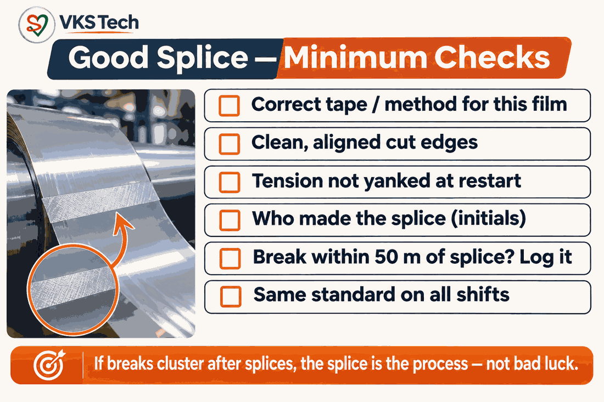
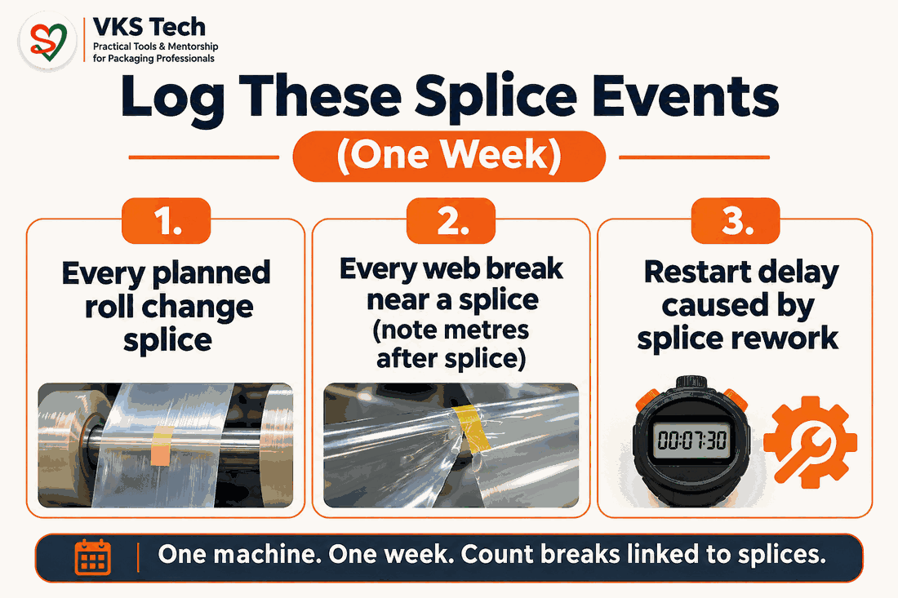
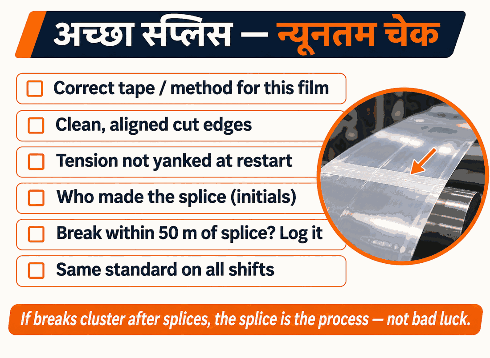
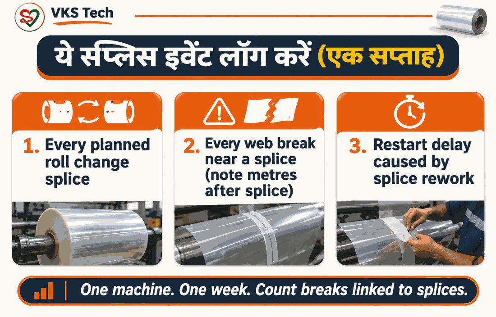

🔗 Splice Discipline: Fewer Breaks, Less CLEAR Scrap
📖 8-min read | Plant Operations | Practical, numbers-first
A web break looks like bad luck. Often it is a weak splice meeting normal line tension a few metres later.
Short-stop logs (Blog 105) fill with CLEAR. Scrap piles include “break waste.” Nobody owns the splice as a process — so the same failure repeats across shifts.
Why Splices Deserve Their Own Discipline
Roll changes are frequent on converting and metallising lines. Each change is a splice opportunity. A poor splice can cause:
- Break soon after restart → CLEAR short stop + waste metres
- Rework at the splice → extra stopped time
- Wrinkle or tracking issues blamed on “tension” when the joint was the trigger
Blog 15 covers web-break recovery. This post is upstream: make the joint reliable enough that recovery is rare.
Good Splice — Minimum Checks

- Correct tape or method for this film family (written on the job recipe if it varies)
- Clean, aligned cut edges — no folded corners, no contamination in the joint
- Restart without yanking tension; ramp as your standard allows
- Who made the splice — initials on the tally or roll note
- If a break occurs within ~50 m of a splice — log “splice-linked”
- Same method on night shift as day shift
Keep the standard short enough to use at 2 a.m. Long SOPs that stay in a binder do not change break rates.
What to Log for One Week (One Machine)

- Every planned roll-change splice (tick)
- Every web break near a splice — note approximate metres after the joint
- Any restart delay caused by splice rework
End of week: splice-linked breaks ÷ total splices. That ratio is more honest than “we had some breaks.”
Two-Week Improvement Loop
- Pick the machine with the most CLEAR stops or break scrap
- Post the minimum splice checks at the bay
- Log splices and splice-linked breaks for seven days
- Rank one cause (tape, cut quality, tension at restart, training gap)
- One countermeasure only — then measure the next seven days
- One line in the daily meeting when the ratio spikes
Link to Short Stops, Staging, and Recipe
Short stops (105) — CLEAR often includes break-after-splice.
Staging (106) — Tape, knives, and the next roll ready before stop reduce rushed splices.
Job recipe (104) — Film-specific splice method belongs on the one-pager when it is not universal.
Skill coverage matters: if only one person “does good splices,” nights and leave weeks will show it in the ratio. Cross-train the method; do not only blame the film.
Key Takeaway
🔗 स्प्लिस डिसिप्लिन: कम ब्रेक, कम CLEAR स्क्रैप
📖 9-min read | प्लांट ऑपरेशन्स | व्यावहारिक, नंबर-फर्स्ट
वेब ब्रेक बदकिस्मती लगती है। अक्सर यह कमज़ोर स्प्लिस होती है जो कुछ मीटर बाद सामान्य टेंशन से मिलती है।
शॉर्ट-स्टॉप लॉग (ब्लॉग 105) CLEAR से भर जाते हैं। स्क्रैप में “ब्रेक वेस्ट” आता है। स्प्लिस को प्रोसेस का मालिक कोई नहीं बनाता — इसलिए वही फेलियर हर शिफ्ट दोहराता है।
अच्छा स्प्लिस — न्यूनतम चेक

- इस फिल्म के लिए सही टेप / तरीका
- साफ, अलाइन्ड कट एज
- रीस्टार्ट पर टेंशन झटका नहीं
- स्प्लिस किसने किया — इनिशियल
- स्प्लिस के ~50 मी के अंदर ब्रेक → “स्प्लिस-लिंक्ड” लॉग
- सभी शिफ्ट एक जैसा तरीका
एक सप्ताह क्या लॉग करें

- हर प्लैन्ड रोल-चेंज स्प्लिस
- स्प्लिस के पास हर वेब ब्रेक (लगभग मीटर नोट करें)
- स्प्लिस रीवर्क से रीस्टार्ट देरी
सप्ताह के अंत: स्प्लिस-लिंक्ड ब्रेक ÷ कुल स्प्लिस।